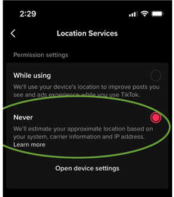
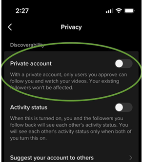
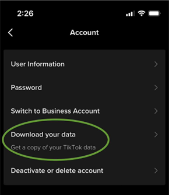

Read the Terms and Conditions (T&C)
You will not be able to use Tiktok if you do not agree to their Terms of Service, which serves as a digital contract between you and the platform, so it is important to carefully read these terms and conditions prior to tapping the “I Agree” button.
In their Terms of Service, Tiktok states that you must provide them accurate and up-to-date information. However, you are still able to make changes to your settings in order to safeguard your privacy and activity while using their platform. Some of these steps include not creating an account with your real name, opting not to link your Tiktok account to any of your personal or professional social media accounts, and not adding any personal information about you such as your age, your profession, and location.

Mobile settings screenshots on how to manage your data preferences
Aside from Tiktok’s own AI, cyberstalkers and other users could collect and process the sensitive information you provide without your knowledge, so it is best to limit the information you display on your profile, and what you post. Tiktok allows you to set your profile to private, which means that only people who you follow back will be able to view your profile as well as your videos.
Since Tiktok explicitly states in their Terms of Service that it collects user data for its advertisers, you can limit what information they obtain from you by turning off the Personalized Ads feature. To do this, go to the settings and privacy > content and display > ads > using Off-Tiktok activity for ad targeting, and then turn it off.

Screenshot on how to download your data
You also have the option to download your data from Tiktok through the settings in order to see what the app already knows about you. Keep in mind that Tiktok can see the content of your private messages, your search and watch history, and what kind of content you engage with the most. These may be too invasive, and if that is the case, you may choose to permanently delete your account but there is no guarantee that the data previously collected from you will be deleted as well from Tiktok’s system.
Final Thoughts
With its consistent growth and now having a solid user base, there is no doubt that Tiktok will continue to dominate social networking and entertainment in general. As content creators, companies, advertisers, and average content consumers continue to use the app on a regular basis, proper education regarding privacy and online security prove to be even more essential. It's important to know when to opt-in and when to opt-out, as well as learning how to minimize risks and assess trade-offs whenever we do use these apps and services. As netizens, we have a responsibility to keep ourselves informed and up-to-date in order to safeguard our own private information while utilizing any kind of service and network online.
The keyword here is to read: read everything you can about the different content related to TikTok's privacy policy. Read their official dossiers on Privacy Policy and Cookie Policy. In the world of internet and technology, privacy policy rules and other settings always change and morph to adjust to changing user needs and societal trends. Make it a habit to read TikTok's official pages. It doesn't hurt to do research regarding TikTok's policies and updates on other websites that provide reliable and timely information such as reputable news websites that have a technology section, tech websites that have been vetted for accurate information, and tech YouTube channels that provide helpful and relevant information about TikTok such as this one. Using TikTok should be fun and easy. It's made for everyone, and it's made for you!